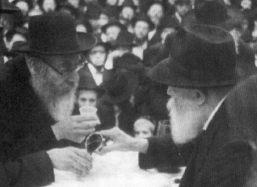

A Latter-Day Old-School Chassid
A gaon and Chassid who was always learning, he completed Shas, Likkutei Torah, and the Rambam’s Yad HaChazaka every year. Along with his genius and outstanding diligence in learning he was modest and humble. * The mashpia, Rabbi Shimon Yakobovitz of Yerushalayim, of blessed memory.

A gaon in Torah, a gaon in tznius, and a gaon in humility. It would be accurate to say that this described the mashpia, Rabbi Shimon Yakobovitz, who passed away on Shabbos Parshas Chayei Sarah, at the age of 83. R’ Yakobovitz, in addition to being a genius in Nigleh, served as mashpia in the Baal HaTanya shul in Meah Sh’arim. For many years he was known as a devoted teacher in the Meah Sh’arim Talmud Torah (elementary school).
Every morning, R’ Yakobovitz would walk to daven at the Kosel, all the while reviewing Mishnayos by heart. From the early morning hours and throughout the day, he was constantly learning Torah. Aside from the many shiurim he gave, he used every free moment for learning. His enormous Torah knowledge was well-known, and it was all with the utmost modesty and humility.
***
R’ Yakobovitz was born in Yerushalayim in 5690/1930. His father was R’ Aharon, head of the Otzar HaPoskim Institute. His mother was the daughter of the tzaddik, Rabbi Aryeh Levin (A Tzaddik in our Time). His grandfather, R’ Elchanan Yakobovitz, was born to Kopust Chassidim, but during World War I he ended up in the town of Lubavitch. After many years he moved to Eretz Yisroel where he kept in touch with the Chabad Chassidim. Years later, his grandsons, R’ Shimon and his brother R’ Elchanan, became Lubavitcher Chassidim.
As a child, he attended the Eitz Chaim Yeshiva in Yerushalayim. When he grew older, he was sent to learn in Achei T’mimim in Tel Aviv where he was very influenced by the mashpia, R’ Chaim Shaul Brook. After two years, he returned to Yerushalayim and continued learning in Toras Emes where he absorbed Chassidus from the mashpiim R’ Moshe Yehuda Reichmann, R’ Dov Goldberg, and R’ Moshe Weber.
At this time, many bachurim from non-Lubavitch homes learned in Toras Emes. R’ Shimon and some of his friends did a lot to ensure that the yeshiva would retain its Chabad personality, and he received particular encouragement in this from the Rebbe.
When he became of age, the daughter of R’ Eliyahu Tzvi Kroizer was suggested as a shidduch for him. His future father-in-law tested him in learning and was favorably impressed. A few months after their wedding, he founded a Chabad shul in the Shaarei Chesed neighborhood. He not only founded it, but gave shiurim in Chassidus to people of all backgrounds. Among those who learned with him and ended up coming to Chabad thanks to him were R’ Shmuel Elozor Halperin, R’ Naftali Roth, and R’ Tzvi Greenwald.
He also gave a shiur in sichos of the Rebbe Rayatz. The shiur took place in his home every Shabbos afternoon and was attended by a minyan of bachurim who were eager to learn Chassidus. The shiur was the impetus for these young men to become Lubavitchers, among them R’ Avrohom Lieder, R’ Elozor Ehrentrau, R’ Yitzchok Meir Ehrentrau.
A branch of Tzeirei Chabad was founded in Yerushalayim and R’ Yakobovitz was appointed a member of the hanhala alongside the following staff members: R’ Zushe Wilmovsky (the partisan), R’ Elozor Ehrentrau, R’ Nachum Rabinowitz, R’ Zev Dov Slonim, R’ Hillel Rabinowitz, and the two Halperin brothers – R’ Shmuel Elozor and R’ Levi Yitzchok.
R’ Yakobovitz yearned to see the Rebbe, but his requests to do so were rejected by the Rebbe himself who wondered about R’ Yakobovitz’s seeking the welfare of an individual (himself) at the expense of the benefit of the public who would be deprived of his spreading of Chassidus. It was first in Tishrei 5718/1957 that he received permission to travel to 770. In an unusual step, Rashag arranged his visa for him.
He had a number of private audiences with the Rebbe adding up to a total of five hours that month. The Rebbe instructed him to increase his teaching of Chassidus within the framework of Tzach as well as through other channels.
Over the years, he brought many close to Chassidus. One of the bachurim who came to Chassidus through him was R’ Tuvia Blau. The day after R’ Shimon’s funeral, R’ Blau told Beis Moshiach, “After I began learning Chabad Chassidus, I went to Toras Emes regularly in order to hear shiurim in Chassidus from the mashpia R’ Moshe Yehuda Reichmann. When the shiur was over, I would learn with R’ Shimon Yakobovitz and review the shiur. I would ask many questions about the ways of Chabad and I was given clever, fascinating answers, which got me more interested in Chabad. After a few months, he was able to convince me to write to the Rebbe for the first time. I received a response which tipped the scale, and I became a Lubavitcher Chassid.
“In the years that followed, I continued learning Chassidus in his home and received explanations and answers to all my questions, which is why I refer to him as ‘my teacher and rebbi’ for Chassidus.”
R’ Yakobovitz was devoted to the Rebbe’s mivtzaim and horaos. At first, he worked as a member of Tzach. Even when he no longer held an official title, he continued doing every mivtza that the Rebbe announced.
He was one of the distinguished personalities of the Baal HaTanya shul in Meah Sh’arim and was eventually appointed as the mashpia of the shul. Over the years, he delivered many shiurim in Chassidus and Divrei Torah. Both young and old residents of the religious neighborhoods attended his shiurim and he was mekarev many of them to the light of Chabad.
He asked the Rebbe about everything and did not veer an iota from the Rebbe’s instructions.
He supported himself as an elementary school teacher and preferred concealing his Torah greatness in this manner. His genius was known even though he made every effort to hide it. He was extraordinarily well-versed in all of Shas, Talmud Yerushalmi, Midrash, Rambam, and in Sifrei Kabbala and Chassidus. From a young age he knew all of Chumash by heart with the proper vowels and tune. He was an expert in Hebrew grammar and knew how to properly punctuate Aramaic.
One of his sons recounted how once, on the night before a bris, the vacht nacht, he and his brothers sat and recited chapters from the holy Zohar. Their father was in the kitchen making himself tea. While doing so, he corrected them in how they read the passage from the Zohar.
One of the people who was in contact with him regarding a Torah project in the latter part of his life said that R’ Yakobovitz was a general editor and a punctuation editor. He would also notate every source in the Zohar that appeared imprecisely. “He would not check every source inside in order to see whether it was correct or not; he knew it by heart and when he saw that something was written improperly, he noted this immediately. Next to one of his comments he wrote ‘Don’t suspect that I know Zohar by heart because this is [wrongly] suspecting the innocent.’”
When the publisher of one of the s’farim of explanations on the Zohar wanted to get approbation from the Badatz of the Eidah HaChareidis of Yerushalayim for the book, the Badatz refused to give it because they could not say whether the punctuation was correct. They were willing to give their approbation only if R’ Yakobovitz was willing to check the punctuation.
His diligence in Torah study was remarkable. He reviewed his learning every spare moment. He fulfilled the mitzva of “when you travel on the road,” by reviewing Mishnayos by heart and maamarei Chassidus.
He also lived and breathed Halacha and did not veer at all from it, including those halachos that tend to be disregarded in our generation. His acquaintances say that he was “a Jew of the Zohar, of Chassidus, and of Tikkun Chatzos, for whom many nights were devoted to G-d without sleeping, which is what he also did every Thursday night.”
Every year, on Purim, he would fulfill “ad d’lo yada” by drinking a full cup and saying l’chaim with each person who came to visit him, and there were many. When he was merry with wine, he would pour forth Divrei Torah, Chassidus, and Kabbala with unusual proficiency and sharpness, even though he was ordinarily very careful not to reveal how much he knew and preferred that people know him as a simple elementary school teacher.
***
He is survived by his wife Masha Rochel and his children: R’ Yaakov Chaim of Tzfas, R’ Tuvia of Yerushalayim, R’ Mordechai of Beitar Ilit, R’ Elchanan of B’nei Brak, Mrs. Devorah Eisenbach of Yerushalayim, and Mrs. Leah Scheinfeld of Beit Shemesh.
Shneur Zalman Berger. "A Latter-Day Old-School Chassid." Beis Moshiach, no. 860 (December 14, 2012).